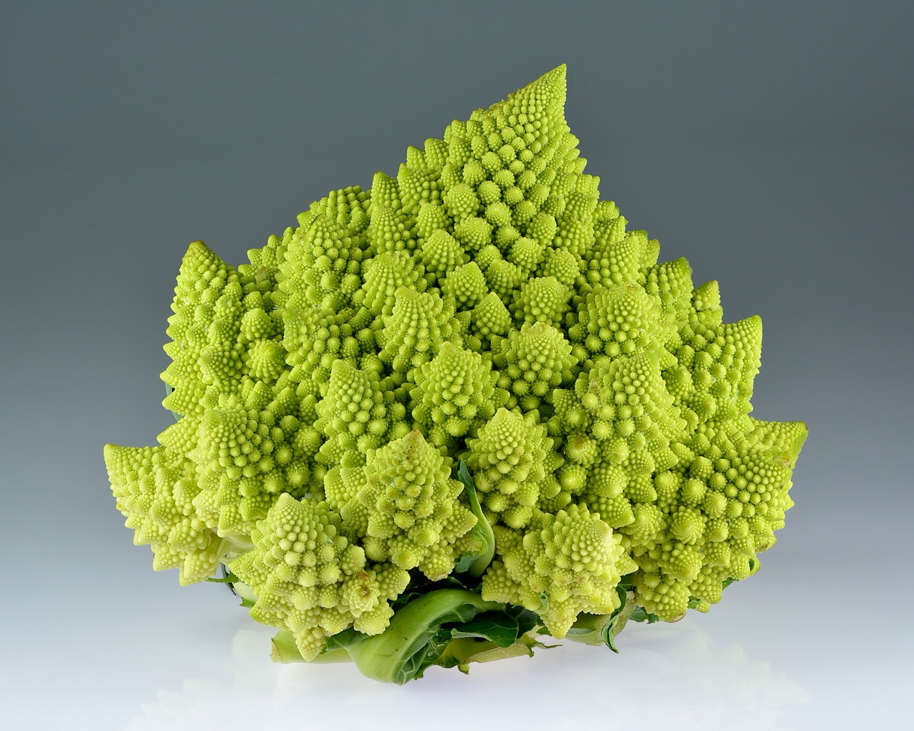
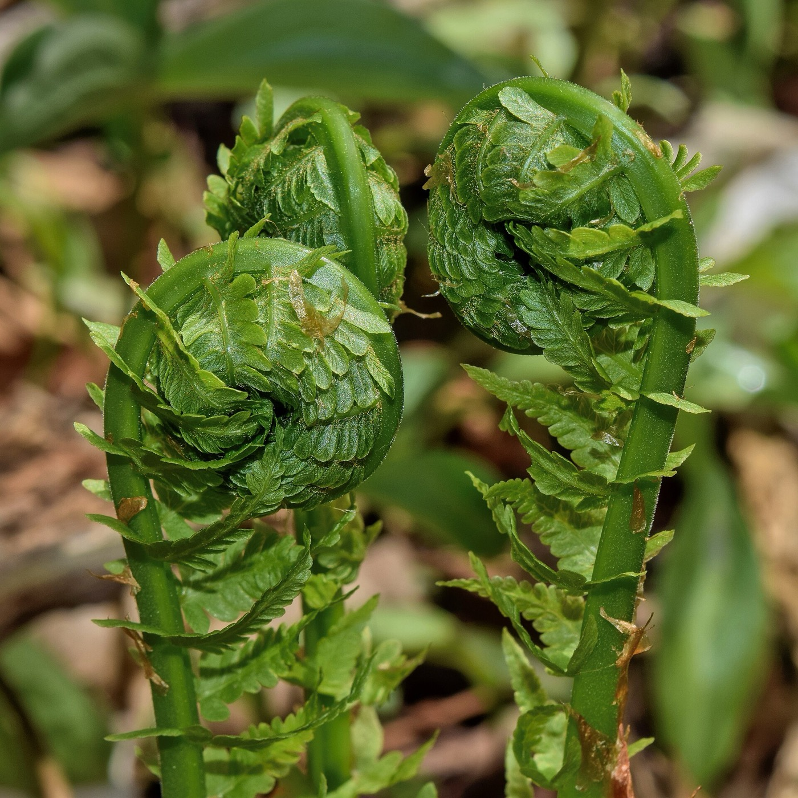
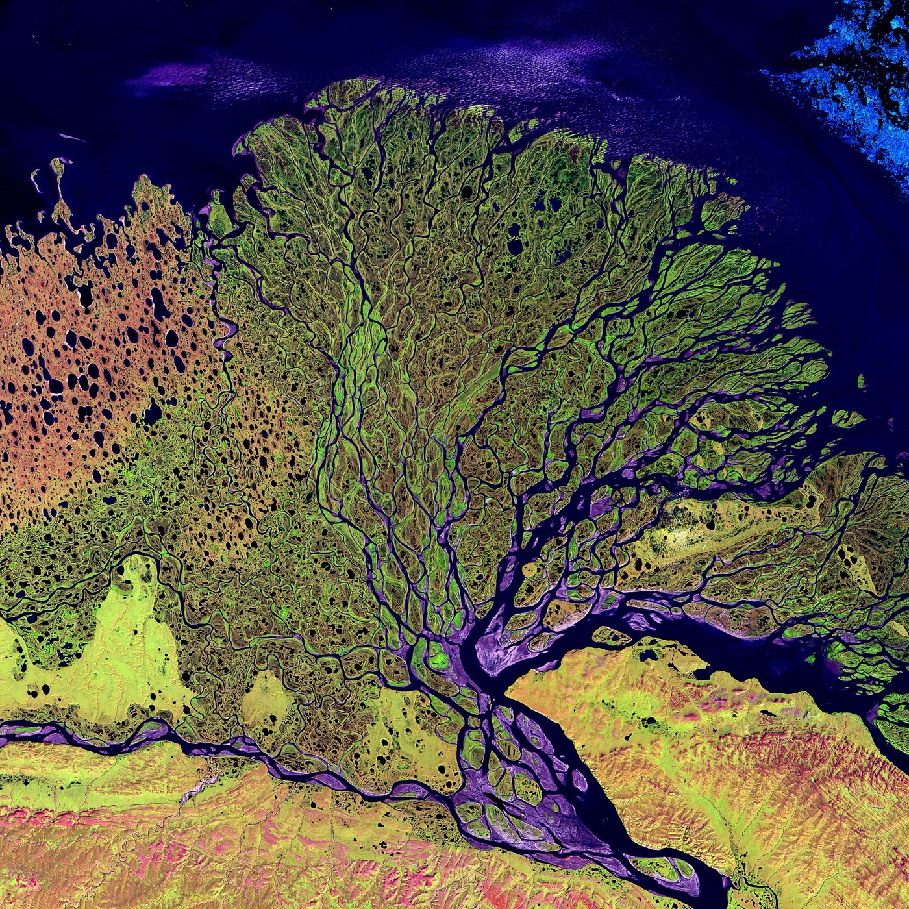
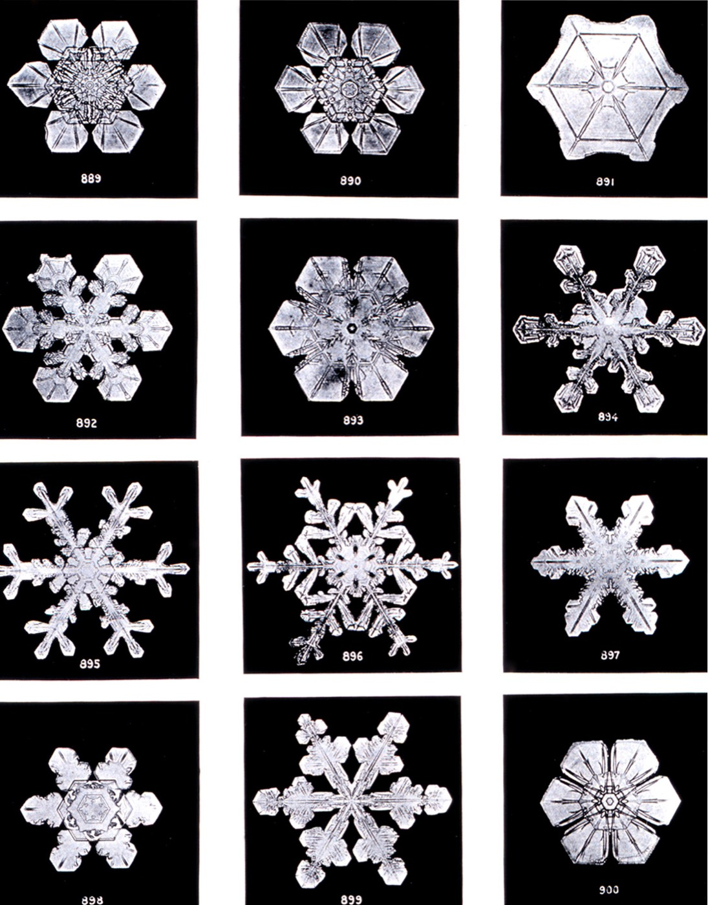
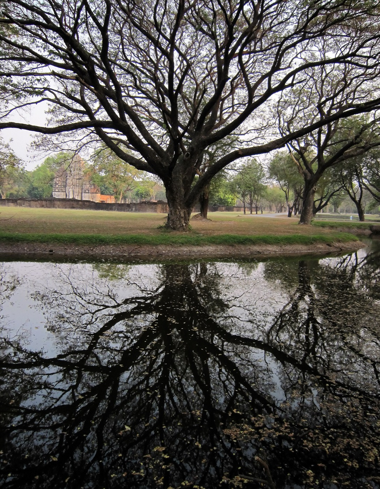

Shapes built from smaller copies of themselves
Play with Fractals
Zoom, fold, grow and scatter. The drawings here grow live from a rule or two.
เล่นกับแฟร็กทัล · Nine toys, in English and Thai
nanobotco.github.io/fractals
Fractals
Broken, and the same all the way down
A fractal is a shape that holds smaller copies of itself, with smaller copies inside those, as far down as you care to look. A fern frond is made of little fronds; a branch looks like a small tree; a stretch of coast looks like a whole coast.
Benoit Mandelbrot named them in 1975, from the Latin fractus, broken. Mathematicians had been drawing such shapes for a hundred years and calling them monsters, because they broke the old rules about length, area and dimension.
Most come from a short rule repeated many times. Each toy below shows its rule. Press the buttons and watch it run.
Helge von Koch, 1904
A snowflake with an endless edge
Start with a triangle. Cut each side in three and raise a small triangle on the middle third. Do the same to the new sides, and again.
Each step turns one side into four, each a third as long, so the outline grows by 4/3. After ten steps it is 18 times as long; after a hundred, three trillion times. The area grows by less each step and settles at 8/5 of the first triangle: an outline with no end around a patch you could paint.
Level 7 has 49,152 sides. Your screen runs out of pixels long before the rule runs out of steps. Zoom forever rides down one side: a third of a side looks like the whole side, so the picture loops.
A game of chance
Roll dice, get a triangle
Put three corners on the page and a dot anywhere. Pick a corner at random, move the dot halfway to it, and mark where it lands. Repeat.
You might expect a smudge. Out comes Wacław Sierpiński's triangle of 1915: a triangle with its middle cut out, the middle cut out of the three left over, and so on down. Michael Barnsley called this the chaos game.
Change the corners and the jump. Fit picks the jump at which the copies just touch. Four corners and a halfway jump fill the square solid; forbid the same corner twice and a pattern comes back.
Tap the picture to drop the dot somewhere new. One jump draws the move as a line.
Branches
A tree from one rule
Draw a trunk. At its top draw two shorter branches, one turned left and one right. Treat each branch as a trunk and do it again.
Each level doubles the tips: ten levels make 1,024, thirteen make 8,192. If each branch is under half the length of its parent, the whole tree has a finite length however many levels you add. At half or more, the total grows without limit.
Rivers, lungs, lightning and blood vessels branch in the same manner. Move across the tree to bend it.
Four moves
A fern from four moves
Michael Barnsley's fern, from his 1988 book Fractals Everywhere, plays the chaos game with four moves in place of corners. Each move shrinks, turns and shifts the whole picture: one makes the stem, one the rest of the frond above the lowest pair of leaflets, one the left leaflet and one the right.
The big move comes up 85 times in a hundred, the stem once, each leaflet 7 times. Pick a move at random, apply it to the dot, mark it, repeat. Lean and Leaflets change the numbers inside the moves; Colour by move shows which move put down each dot.
Paper folding
Fold a strip, get a dragon
Fold a strip of paper in half, in half again the same way, and again. Open it so each crease makes a right angle. Ten folds give 1,024 pieces in the shape of a dragon.
NASA physicists John Heighway, Bruce Banks and William Harter found it; Martin Gardner wrote it up in Scientific American in 1967. The curve touches itself at corners but does not cross, and four dragons turned four ways fit together around a point with no overlap.
The creases read R R L R R L L R R R L L R L L …, the paper-folding sequence. The odd creases alternate R, L; the even ones repeat the whole sequence.
Creases
z → z² + c
The Mandelbrot set
Pick a point c on the picture; it stands for a number with two parts, a complex number. Start at zero, square it and add c. Square the answer and add c again. Repeat.
Some points fly off; some stay near home however long you go. The ones that stay make the dark shape. Colour shows how fast the rest leave. Move over the picture, or tap, to see a point's path.
Places
Colours
Drag to move, scroll or pinch to zoom, double-click to dive. Small copies of the whole set sit along the edge, joined by threads, with more along theirs. This toy stops near 200,000 times, where the computer's numbers run out of digits; the set goes on.
Robert Brooks and Peter Matelski printed a rough picture of it in 1978; Mandelbrot's pictures at IBM from 1980 made it famous. Its area is about 1.5066. In 1998 Mitsuhiro Shishikura proved its edge has dimension 2, as crinkled as a curve in a plane can be.
One c, one picture
Julia sets
Keep c fixed and start each point of the picture from where it sits instead of from zero. The points that stay make a Julia set, after Gaston Julia, who studied them in 1918 while Pierre Fatou did the same, with no computer to draw them.
Move over the small map to choose c. With c inside the Mandelbrot set, the Julia set comes in one piece; outside, it falls to dust. The wildest ones sit near the edge.
Map of c
How long is a coast?
Measure a coastline
Lewis Fry Richardson measured coasts and borders with shorter and shorter rulers, and the totals kept growing. Spain and Portugal gave lengths for their shared border more than 200 km apart. His figures came out in 1961, after his death; Mandelbrot took them up in 1967 in “How long is the coast of Britain?”
Walk the made-up coast below with a pair of dividers. Halve the ruler and the coast comes out about a fifth longer. Plot length against ruler on log scales and the points fall along a line; one minus its slope is the dimension. A smooth curve scores 1, this coast about 1.26, the west coast of Britain about 1.25 by Richardson's figures.
The coast is 1,000 km from end to end. Below about 2 km the made-up coast runs out of wiggles and stops growing; a coast outdoors carries on down to rocks and grains of sand.
Dimension
Make your own
Cut a line into 3 and you get 3 copies, each a third the size: 3 = 3¹. A square gives 9 = 3², a cube 27 = 3³. The power is the dimension. The Koch curve gives 4 copies at a third: 4 = 3D, so D = log 4 / log 3 ≈ 1.26, between a line and a plane.
Drag the dots of the bent line, tap the line to add a dot, double-tap a dot to remove it. Each straight piece is replaced by the whole bent line, level after level. With pieces of lengths r₁, r₂, …, the dimension D solves r₁D + r₂D + … = 1.
Start from
If pieces cross or overlap, the shape fills less than this number says.
Out of doors
Found in nature
Nature's fractals run out after a few levels, at the size of a cell or a crystal of ice, but the pattern shows. In Thai the Romanesco is กะหล่ำดอกเจดีย์, the pagoda cauliflower.
Thai ornament grows flames on flames: see Kranok, Drawn.

.jpg){kind=link}









_@_Sukhothai_Historical_park_,_%E0%B8%95%E0%B9%89%E0%B8%99%E0%B8%88%E0%B8%B2%E0%B8%A1%E0%B8%88%E0%B8%B8%E0%B8%A3%E0%B8%B5_-_panoramio.jpg){kind=link}
History
Monsters to pictures
- 1883Georg Cantor takes a line, removes its middle third, then the middle thirds of what is left, without end. Dust remains.
- 1904Helge von Koch's snowflake curve: a curve with no tangent at any point.
- 1915Wacław Sierpiński's triangle.
- 1918Gaston Julia and Pierre Fatou work out Julia sets on paper.
- 1961Lewis Fry Richardson's coast and border measurements are published.
- 1967Mandelbrot asks how long the coast of Britain is. Martin Gardner's column carries the dragon curve.
- 1975Mandelbrot coins the word fractal.
- 1978Robert Brooks and Peter Matelski print the first picture of the Mandelbrot set.
- 1980Mandelbrot's computer pictures at IBM.
- 1982The Fractal Geometry of Nature.
- 1988Michael Barnsley's Fractals Everywhere: the fern and the chaos game.
- 1998Mitsuhiro Shishikura: the edge of the Mandelbrot set has dimension 2.
Words
A shape with smaller copies of itself inside.
A part looks like the whole.
Feed the answer back into the same rule.
The power D in copies = scaleD.
A number with two parts, drawn as a point on a plane.
Steps before z leaves the circle of radius 2.
Random jumps that draw a fixed picture.
A set of shrinking moves, as in the fern.
A coast's length depends on the ruler.
Outline without end, area 8/5 of its triangle.
3 copies at half size; dimension 1.585.
Paper folded in half again and again; edge dimension 1.524.
Points c whose path from zero stays near home.
For one c, the starting points that stay near home.
A cauliflower of cones made of cones.
Sources
Facts on this page come from these. Photographs come from Wikimedia Commons, each credited where it appears.
- Mandelbrot (1967), How Long Is the Coast of Britain? Science 156
- Shishikura (1998), The Hausdorff dimension of the boundary of the Mandelbrot set and Julia sets, Annals of Mathematics 147
- Wikipedia: Fractal
- Wikipedia: The Fractal Geometry of Nature
- Wikipedia: Koch snowflake
- Wikipedia: Sierpiński triangle
- Wikipedia: Chaos game
- Wikipedia: Barnsley fern
- Wikipedia: Dragon curve
- Wikipedia: Regular paperfolding sequence
- Wikipedia: Mandelbrot set
- Wikipedia: Julia set
- Wikipedia: Coastline paradox
- Wikipedia: Lewis Fry Richardson
- Wikipedia: Cantor set
- Wikipedia: List of fractals by Hausdorff dimension
- วิกิพีเดีย: แฟร็กทัล
- วิกิพีเดีย: กะหล่ำดอกเจดีย์
- Wikimedia Commons